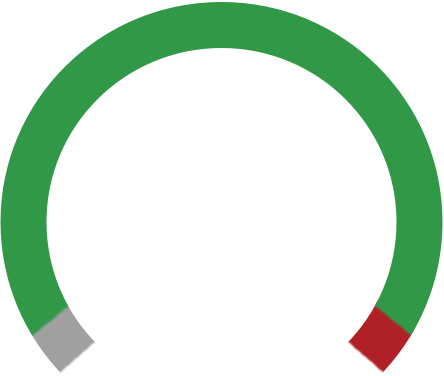

Welcome to the Reference of Ancient Times. This guide is a cheat sheet for the SOMA Laboratory Rumble of Ancient Times. Since the bulk of the text of the manual is not repeated here, this guide is not designed to be your primary source for getting to know your RoAT. Once you have a basic understanding of how the instrument works, however, I hope that you'll find this page a handy map.
In addition to distilling the info to the basics, this guide is designed to be mobile-friendly, so you can view it without being tied to your computer. You can save the guide to the homescreen of your mobile device for easy mobile access.
If you find any errors or have any suggestions, please don't hesitate to send them to damon@rustleworks.com. The code is open sourced under the MIT License. If you'd like to clone it for your own purposes, you can find the source at Github.
Happy Bleeping!
| 0 | Addition. Simply adding together two signals. |
| 1 | Addition with overflow. If the sum of the signals crosses the upper or lower border, the result is directed to the opposite edge and continues growing from there. |
| 2 | Subtraction 1. The second signal is subtracted from the first. If the first signal is lower, the result will be zero. |
| 3 | Subtraction 2. The lower signal is subtracted from the higher signal. |
| 4 | Multiplication. Both signals are multiplied. This effect is also called ring modulation. |
| 5 | Exclusive OR (XOR). In this mode, a bitwise XOR is performed between the signals. The values of each signal are 8-bit. |
| 6 | Frequency modulation (FM). The first signal is modulated by the second. |
| 7 | Waveform modulation. First, the two signals are added using the first algorithm, then the resulting signal is wave-shaped. Each node has its waveform algorithm. |
internal clock setting tempo

no clock, LFOs are not synced
external clock
bypassing on
bypassing off
metronome